Flyback 400V/12V design¶
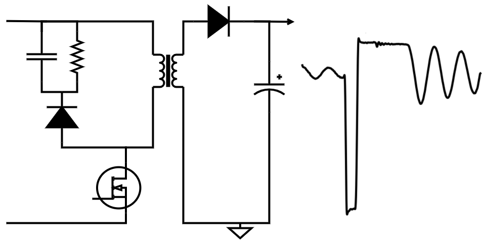
Table of contents¶
Introduction¶
Inputs¶
Simplified overall schematic¶
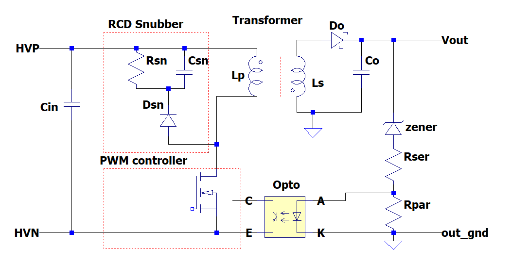
The PWM controller¶
Introduction of the TNY2XX familly¶
We will use a TNY2xx family controller
Why:
- This controller has an integrated MOSFET
- It requires a minimum BOM
- It can operate without an auxiliary winding
- It provides integrated frequency jitter (spread spectrum to reduce EMI perturbation)
How this controller works ():
This controller works with max-current / max-duty-cycle
It has an internal clock that fixes the maximum switching frequency
- example: 132 kHz
In each cycle, it checks the feedback pin
- if the feedback pin is activated → skip (escape) the cycle
- otherwise → turn on the MOSFET
The MOSFET turns off when one of the following conditions is met:
- the primary current reaches the maximum value
- example: 250 mA
- or the duty cycle reaches the maximum allowed value
- example: 62%
- the primary current reaches the maximum value
This controller has an internal 5.8 V generator
- used for self-powering
- no external auxiliary supply is required
For more information pease check the datasheet below [1].
In this design, we will shose the TNY-264 in open frame configuration
- Breakdown Voltage = 700
- Power = 9W
- Frequancy = 132kHz with +/-8kHz of jitter
- Rds(ON) = 28Ω @ 25°C and 42Ω @ 100°C (typ), 48Ω in the worst case
- Ilim = 250mA (typ)
- Max duty cycle = 65% (typ)
Let’s estimate the theorical maximum power that this controller can extract
Let's estimate the thermal discipation in this condition (only conduction losses)
- The ΔT in this condition is relatively low, because in this quick calculation we assume that the only loss inside the IC is the ohmic loss caused by RDS_ON
- In reality, there are additional losses, such as switching losses (especially at 132 kHz) and the internal power consumption of the controller.
In our design, the maximum output power will be 4 W, so we respect the datasheet.
Simulation for Understanding TNY‑264, TNY‑280 ...¶
To clearly understand how this controller works, I suggest the following step-by-step simulation, beginning with the simplest configuration and gradually introducing more advanced features. The goal is to improve conceptual understanding, not to provide a fully rigorous or exact model of the controller.
You can find all these simplified models in the link.
Level 1 :
At this level, the PWM controller model includes only a master frequency clock (set to 132.45 kHz in the example below) and a current‑limit reset.
Even with this simplified model, the controller is able to perform primary peak‑current control.
See the purple current curve in the simulation shown below.
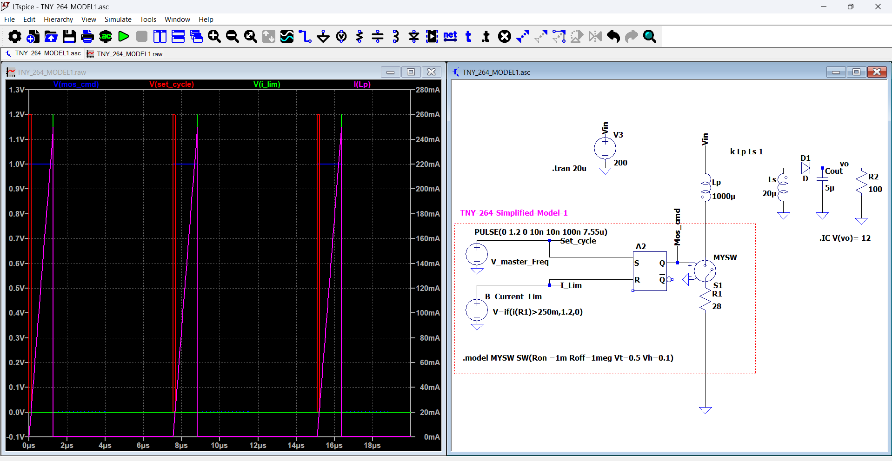
Level 2 :
At this stage, the maximum duty‑cycle reset control is added. The controller resets whenever one of the following conditions occurs:
- The current reaches its maximum target value.
- The duty cycle exceeds the controller’s maximum allowed value (approximately 63%).
In the first figure below, the reset is always triggered by the maximum current.
For the second figure, the reset is triggered by the maximum duty cycle.
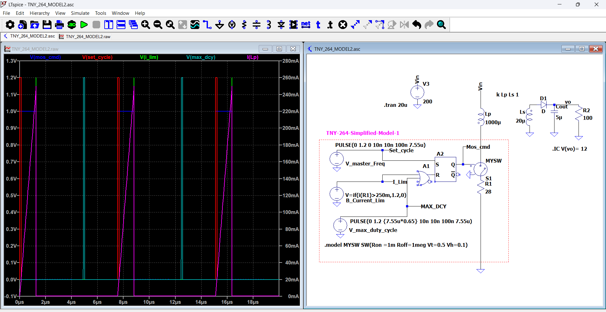
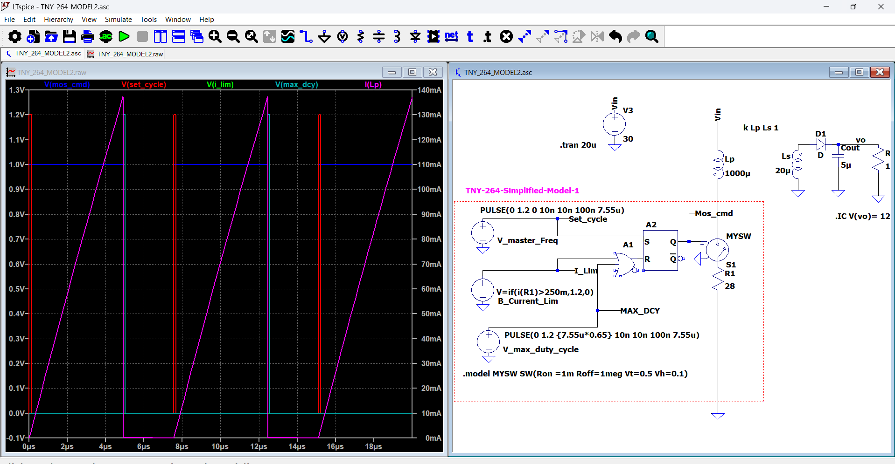
Level 3 :
At this level, we introduce the feedback control. The feedback is evaluated at the start of each cycle, and if it is active, the current cycle is skipped. This results in fewer cycles, reduced current, and lower voltage until the feedback is deactivated, after which normal operation resumes.
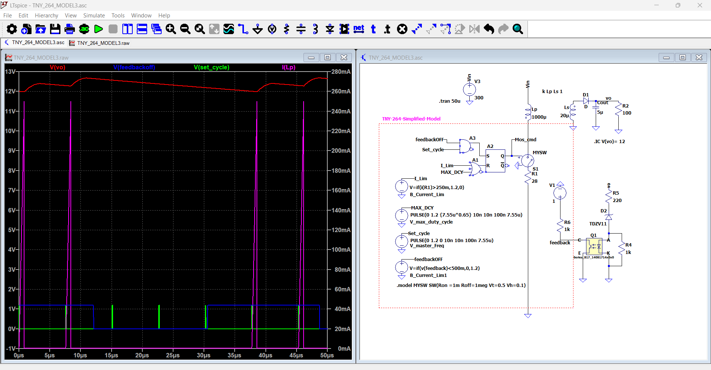
The transformer design¶
let's start with this TDK planner small core ELP 22/6/16 with I 22/2.5/16 N87
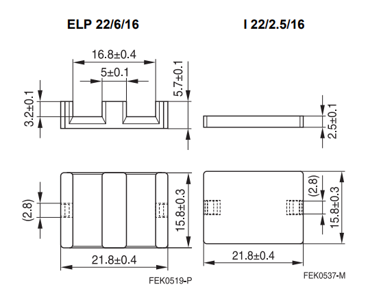
For more information pease check the datasheet below [1].
One example calculation
For a generic flyback converter, the calculation is like this:
But for our max-current max-duty-cycle TNY-264 the calculation is below
In first time let's focus on the primary side
Initial time step:
$dt = DC_{\text{max}} \cdot \dfrac{1}{\text{Freq}}$Calculate maximum DC current:
$I_{\text{dcmax}} = \dfrac{V_{\text{in\_nom}} \cdot dt}{L_m}$Conditional calculation:
If $I_{\text{dcmax}} < I_{\text{lim}}$:
$I_{\text{peak}} = I_{\text{dcmax}}$
$D = DC_{\text{max}}$Else:
$I_{\text{peak}} = I_{\text{lim}}$
$dt = \dfrac{L_m \cdot I_{\text{lim}}}{V_{\text{in\_nom}}}$$D = \dfrac{dt}{ Freq}$
The primary stored power
Below a table of some Np value and corresponding Bpeak, Margin, Duty cycle (D), ...
| Np | D | Ipeak | Lm_uH | Power_prim | Bpeak | Margin % | |
|---|---|---|---|---|---|---|---|
| 0 | 10 | 0.045 | 0.250000 | 520.0 | 2.145000 | 0.166 | 44.798301 |
| 1 | 20 | 0.181 | 0.250000 | 2080.0 | 8.580000 | 0.331 | -10.403397 |
| 2 | 30 | 0.406 | 0.250000 | 4680.0 | 19.305000 | 0.497 | -65.605096 |
| 3 | 40 | 0.650 | 0.224905 | 8320.0 | 27.775805 | 0.596 | -98.642476 |
| 4 | 50 | 0.650 | 0.143939 | 13000.0 | 17.776515 | 0.477 | -58.913981 |
| 5 | 60 | 0.650 | 0.099958 | 18720.0 | 12.344802 | 0.397 | -32.428317 |
| 6 | 70 | 0.650 | 0.073438 | 25480.0 | 9.069651 | 0.341 | -13.509986 |
| 7 | 80 | 0.650 | 0.056226 | 33280.0 | 6.943951 | 0.298 | 0.678762 |
| 8 | 90 | 0.650 | 0.044426 | 42120.0 | 5.486579 | 0.265 | 11.714455 |
| 9 | 100 | 0.650 | 0.035985 | 52000.0 | 4.444129 | 0.238 | 20.543010 |
Filter with dutyCycle > 10%
| Np | D | Ipeak | Lm_uH | Power_prim | Bpeak | Margin % | |
|---|---|---|---|---|---|---|---|
| 1 | 20 | 0.181 | 0.250000 | 2080.0 | 8.580000 | 0.331 | -10.403397 |
| 2 | 30 | 0.406 | 0.250000 | 4680.0 | 19.305000 | 0.497 | -65.605096 |
| 3 | 40 | 0.650 | 0.224905 | 8320.0 | 27.775805 | 0.596 | -98.642476 |
| 4 | 50 | 0.650 | 0.143939 | 13000.0 | 17.776515 | 0.477 | -58.913981 |
| 5 | 60 | 0.650 | 0.099958 | 18720.0 | 12.344802 | 0.397 | -32.428317 |
| 6 | 70 | 0.650 | 0.073438 | 25480.0 | 9.069651 | 0.341 | -13.509986 |
| 7 | 80 | 0.650 | 0.056226 | 33280.0 | 6.943951 | 0.298 | 0.678762 |
| 8 | 90 | 0.650 | 0.044426 | 42120.0 | 5.486579 | 0.265 | 11.714455 |
| 9 | 100 | 0.650 | 0.035985 | 52000.0 | 4.444129 | 0.238 | 20.543010 |
So we can see that it’s difficult to meet our requirement without adding an air gap and while keeping Np reasonable, so let’s try adding an air gap.
Below is the calculation of the air gap using the TDK formula.
For airgap calculation, see [4].
| Np | D | Ipeak | Lm_uH | Power_prim | Bpeak | Margin % | |
|---|---|---|---|---|---|---|---|
| 0 | 16 | 0.053 | 0.25 | 614.4 | 2.5344 | 0.122 | 59.235669 |
| 1 | 18 | 0.068 | 0.25 | 777.6 | 3.2076 | 0.138 | 54.140127 |
| 2 | 20 | 0.083 | 0.25 | 960.0 | 3.9600 | 0.153 | 49.044586 |
| 3 | 22 | 0.101 | 0.25 | 1161.6 | 4.7916 | 0.168 | 43.949045 |
| 4 | 24 | 0.120 | 0.25 | 1382.4 | 5.7024 | 0.183 | 38.853503 |
| 5 | 26 | 0.141 | 0.25 | 1622.4 | 6.6924 | 0.199 | 33.757962 |
| 6 | 28 | 0.163 | 0.25 | 1881.6 | 7.7616 | 0.214 | 28.662420 |
| 7 | 30 | 0.188 | 0.25 | 2160.0 | 8.9100 | 0.229 | 23.566879 |
Let's start with Np = 26 turns; it's a good compromise between primary power and Bpeak.
Let's chose an Ns
To avoid saturation of the core, the magnetic flux ($B$) must return to 0 in each cycle. This means that the magnetizing inductance must discharge completely into the secondary before the end of the cycle. Therefore, the final magnetizing current must be 0A.
Below an example with Ns = 2
- $D:$ The duty cycle corresponding to $T_{on}$ on the primary mosfet
- $ D_{secondary}$ : The duty cycle corresponding to $T_{on}$ on the secondary diode
- $ D_{conduction}$ : The sum of the above duty cycles must be less than one
Let's repeat the same calculation for different Ns:
| Ns | Isec_peak | Lms_uH | dtSec_us | D_secondary | D_conduction | Vrefl | |
|---|---|---|---|---|---|---|---|
| 0 | 2 | 3.250000 | 9.6 | 2.516129 | 0.332129 | 0.473129 | 161.200000 |
| 1 | 3 | 2.166667 | 21.6 | 3.774194 | 0.498194 | 0.639194 | 107.466667 |
| 2 | 4 | 1.625000 | 38.4 | 5.032258 | 0.664258 | 0.805258 | 80.600000 |
| 3 | 5 | 1.300000 | 60.0 | 6.290323 | 0.830323 | 0.971323 | 64.480000 |
| 4 | 6 | 1.083333 | 86.4 | 7.548387 | 0.996387 | 1.137387 | 53.733333 |
| 5 | 7 | 0.928571 | 117.6 | 8.806452 | 1.162452 | 1.303452 | 46.057143 |
| 6 | 8 | 0.812500 | 153.6 | 10.064516 | 1.328516 | 1.469516 | 40.300000 |
The idea is to pick the highest Ns that ensures the secondary cycle discharges completely, in order to minimize the secondary peak current.
With Ns = 4, the full discharge of the magnetic tank is ensured: a good compromise between the $D\_{conduction}$ condition and $V\_{refl}$.
So we will start with Np = 26 and Ns= 4 and an AL = 2400 nH that provide Lm = 1622 uH in primary side
RCD snubber¶
For details of formulas, please check the document [3].
Refer to the schematic above to see the snubber position.
The snubber allowed voltage is
Chose the snubber resistor Rsn
Let's chose Rsn = 82 kΩ
with this value the Vsn will be
The power of Rsn is
Let's choose Rsn = 82kΩ / 2W to avoid any under-designing.
- To define the snubber capacitor, let's start ith allowed ripple of 5Vpp
Let's chose a Cns = 10nF
With this value the ripple will be:
The current of this capacitor will be
So the Csn = 10nF with minimum current of 5mA(rms)
The output capacitor¶
Hypothesis of a sinusoidal current in the capacitor.¶
This hypothesis is not valid in our case, because the secondary current waveform in the transformer is a triangle that starts at its maximum value and decreases to zero, with no current during the charging phase. However, we will calculate the capacitor using this hypothesis just for information and comparison.
Calculate the output capacitor for a target of 1% output voltage ripple.
Output capacitor of the flyback using the real waveforms¶
Input data for the calculation
Calculate the secondary inductance and ON time
![No description has been provided for this image]()
Current in the capacitor
$i = C \dfrac{dv_{out}}{dt}$
The secondary current decreases linearly from $I_0$ to $0$ during $dt_{sec}$, where $I_0 = n \cdot I_{peak}$ is the secondary peak current:
$i(t) = I_0\left(1-\dfrac{t}{dt_{sec}}\right)$
Voltage variation on the capacitor:
$\Delta V_{out} = \dfrac{1}{C}\int_0^{dt_{sec}} i(t)\,dt$
$\Delta V_{out} = \dfrac{1}{C}\int_0^{dt_{sec}} I_0\left(1-\dfrac{t}{dt_{sec}}\right) dt$
$\Delta V_{out} = \dfrac{1}{C}\left[I_0 t - \dfrac{I_0}{2dt_{sec}}t^2\right]_0^{dt_{sec}}$
$\Delta V_{out} = \dfrac{1}{C}\left(I_0 dt_{sec} - \dfrac{I_0}{2}dt_{sec}\right)$
$\Delta V_{out} = \dfrac{I_0\,dt_{sec}}{2C}$
Using $dt_{sec} = \dfrac{L_{ms}\,\Delta I_{sec}}{V_o}$
where $V_o = V_{out} + V_d$ is the voltage across the transformer secondary (including the diode drop), and $\Delta I_{sec} = I_0$:
$\Delta V_{out} = \dfrac{I_0^2 \, L_{ms}}{2C\,V_o}$
Since $L_{ms} = \dfrac{L_m}{n^2}$ and $I_0 = n \cdot I_{peak}$:
$\Delta V_{out} = \dfrac{n^2 \, I_{peak}^2 \cdot \dfrac{L_m}{n^2}}{2C\,V_o} = \dfrac{L_m \, I_{peak}^2}{2C\,V_o}$
And
$C = \dfrac{L_m \, I_{peak}^2}{2 \, V_o \, \Delta V_{out}}$
where $V_o = V_{out} + V_d$
For the current in the capacitor, we assume that the output current has no AC components, so all the AC ripple flows into the capacitor. Therefore, the capacitor’s peak current is equal to the peak current delivered by the secondary winding.
Using the RMS definition to compute the $Is_{\text{rms}}$.
$Is_{rms} = \sqrt{\frac{1}{T}\int_0^{T} Is(t)^2 dt} $
$Is_{rms} = \sqrt{\frac{1}{T}\int_0^{dt_{sec}} Is_{peak}^2 \left(1 - \frac{t}{dt_{sec}}\right)^2 dt} = Is_{peak}\sqrt{\frac{dt_{sec}}{3T}}$
So in our case
Below is a comparison between the simplified sinusoidal assumption and the more representative waveform of the flyback secondary.
| Sinusoidal | Flyback Waveform | |
|---|---|---|
| Min Co (µF) | 17.890 | 34.0640 |
| Capa Peak-Peak Current (App) | 1.780 | 1.6250 |
| Capa RMS current (Arms) | 0.629 | 0.7646 |
Verification:
Same value $\delta_{Vout}$ of our target
The selected capacitor¶
We will use the capaitor EEVFK1V471Q 470uF 35V 20%
For more information pease check the datasheet below [1].
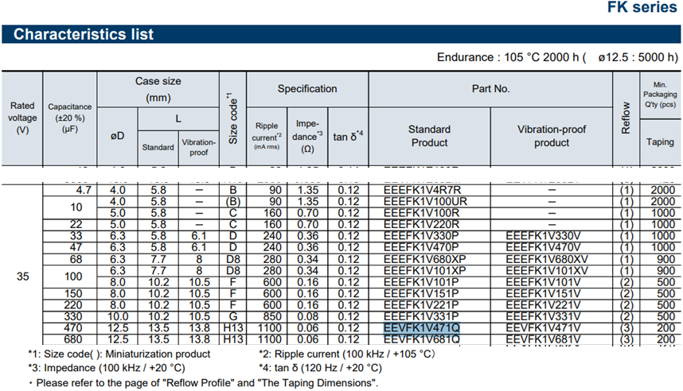
ESR estimation from $\tan(\delta)$
The dissipation factor (loss tangent) of a capacitor is defined as:
$\tan(\delta) = \dfrac{ESR}{X_C} = ESR \cdot \omega \cdot C = ESR \cdot 2\pi f \cdot C$
So:
$ESR = \dfrac{\tan(\delta)}{2\pi f \cdot C}$
Since we don't have ESR at heigh frequancy, we will use the simple ESR formula below:
ESR frequency scaling for electrolytics [5]: $ESR(f) = ESR(120Hz) \cdot \sqrt{\frac{120Hz}{f}}$
The power dissipation at the capacitor:
We don't have the thermal resistance of this capacitor, nor the maximum temperature associated with the maximum current. In the datasheet, we can see that the capacitor's Tmax is 105 °C, which corresponds to its maximum current.
Let's assume that the temperature at the maximum current is 100 °C.
So can estimate the $R_{th}$ as:
For our operating point, the capacitor's T_max can be estimated using this relation.
Let's estimate the $\Delta_{Vout}$ in the worst case. We will assume that $\Delta_{Vout}$ is simply the sum of the maximum voltage caused by the capacitor and the maximum voltage caused by the ESR.
Above is a simplified calculation but it is a maximum of what $\Delta_{Vout}$ can be.
Let’s check the relative voltage delta:
The final flyback Schematic & Modification¶
Below, you will find the original schematic followed by the updated version after the modifications.
Schematic¶
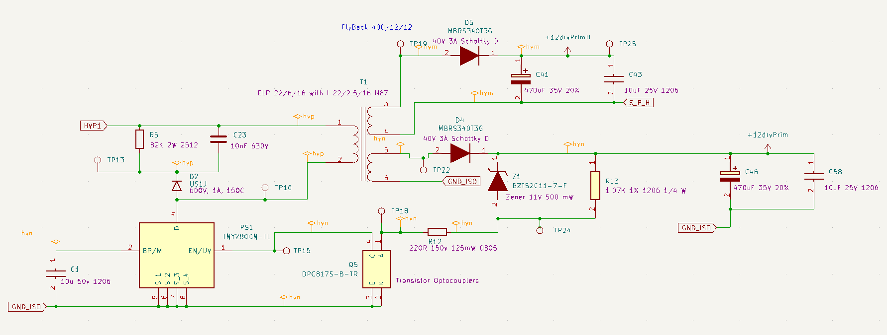
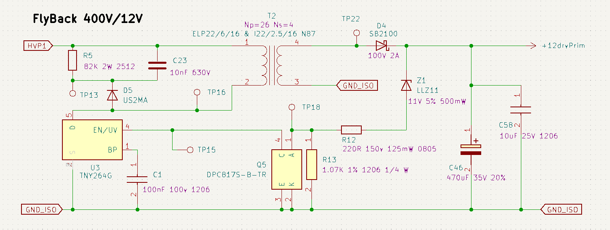
Modifications¶
Below a table that resume all modifications in flyback circuit:
| Change | Before | After | Why | Impact |
|---|---|---|---|---|
| IC controller | TNY280 | TNY264 | I_lim in TNY280 = 750 mA vs 250 mA for TNY264 Risk of core saturation |
Not< pin-to-pin equivalent PCB modification |
| Output diode | MBRS340T3G | SB2100 | VRRM = 40 V (old) vs 100 V (new) VRRM of new design ≈ 62 V (peak) |
Not SMD PCB adaptation |
| Snubber diode | U51J | US2MA | VRRM = 600 V (old) vs 1 kV (new) More margin on VRRM |
No PCB impact |
| Transformer air gap | No air gap | Add air gap | Avoid core saturation | Low cycle energy (low power) |
| Transformer ratio | Np:Ns1:Ns2 = 8:1:1 | Np:Ns = 26:4 | Avoid core saturation | PCB impact External winding needed Primary winding: 8 turns on PCB + 18 turns with wire. |
| R13 (optocoupler parallel resistor) | Parallel with zener | Parallel with opto LED | Mistake in initial schematic | PCB impact |
| Zener | BZT52C11 | LLZ11 | Out of stock | Pin-to-pin compatible |
| BP capacitor C1 | 10 µF | 100 nF | Result of TNY280 → TNY264 | Pin-to-pin compatible |
PCB flyback zone¶

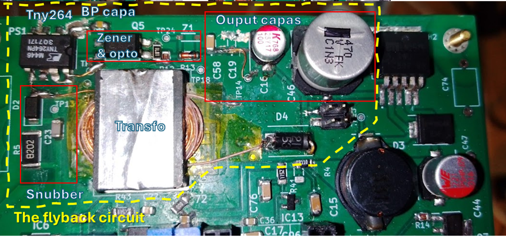
As mensionned in the table above, the initial flyback is modified, so the final version is presented in the figure above (fast prototyping with manual modification of the PCB)
Test & Measurements¶
Setup¶
Below is the setup schematic displaying all the signal names used in this part.
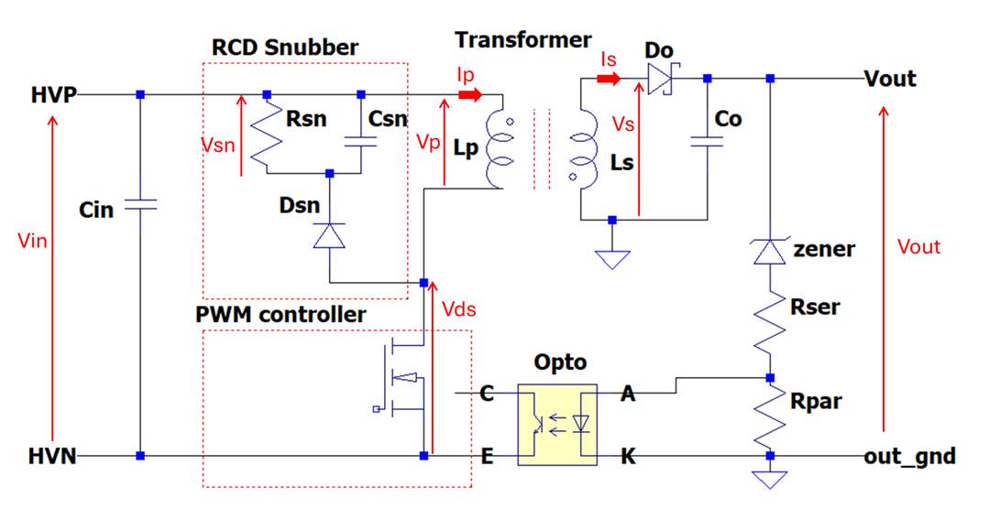
Small-signal transformer characterization¶
In this part, we will caracterize the transofrmer core using small signal only
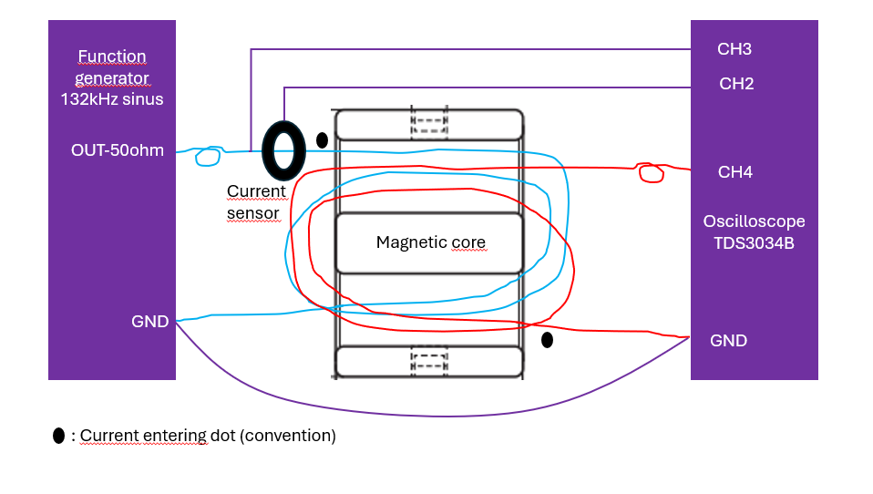
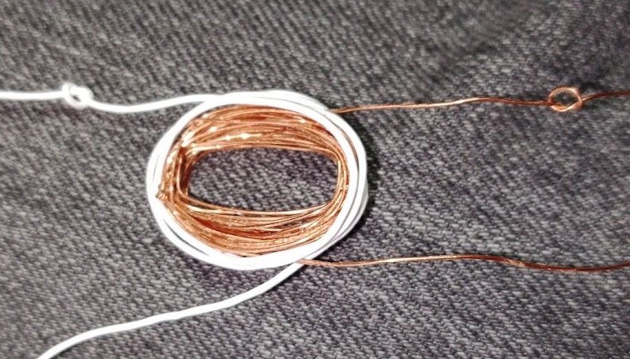
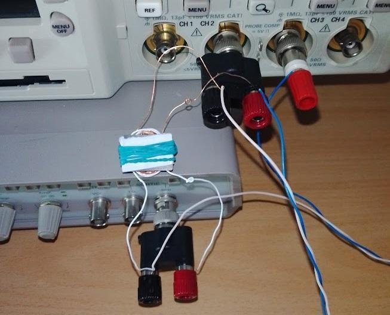
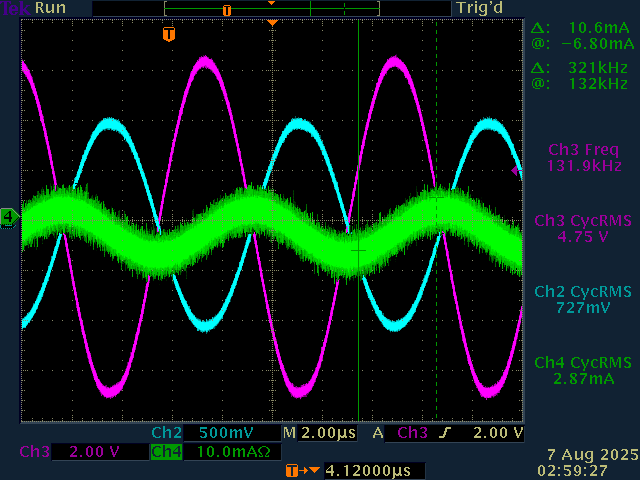
Result analysis
In this section, we will analyze the measured signals (Vp, Vs, Ip) as well as the estimated signals (Vs‑estimation and Ip‑estimation):
- The Vs‑estimation allows us to validate the transformer turns ratio Np/Ns
- The Ip‑estimation enables us to assess the inductance in small‑signal conditions
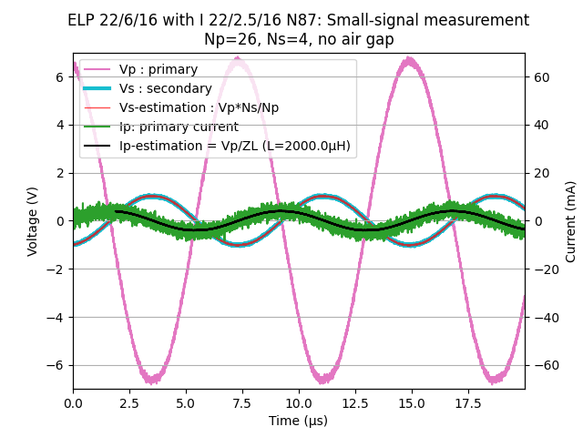
The results show that:
- The estimated Vs aligns closely with the measured Vs (blue vs red), confirming that the turn ratio (Np, Ns) = (26, 4) is valid
- The estimated Ip aligns closely the measured Ip (green vs black), suggesting that the primary inductance Lp is around 2000 µH
Below a simulation of this test using LT-Spice
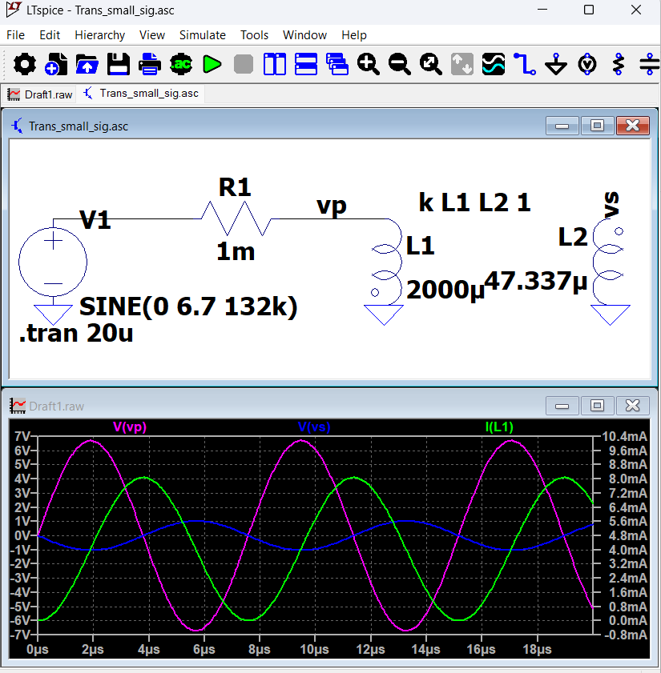
Below the calculation of the AL (nH/turns^2)
The difference between the measured values and the datasheet specifications can be attributed to the air gap present in our setup.
To quantify this, we will estimate the equivalent air gap, assuming that the core's AL value matches the datasheet specification [1].
Therefore, an effective air gap of 22 µm is reasonable, implying a physical gap of approximately 11 µm, as the magnetic flux passes through it twice, producing the 22 µm equivalent.
Primary current and voltage¶
Setup

Oscilloscope
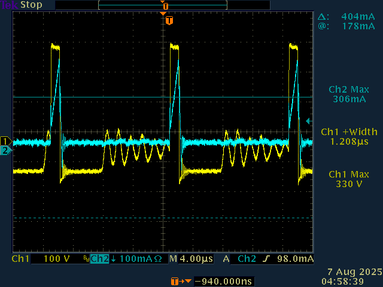
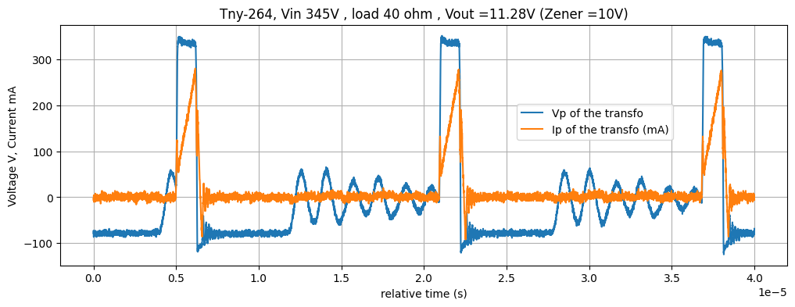
Transformer chacarization
In this preprocessing step, we isolate the ON phase of the primary MOSFET and estimate Lm and Rds:
- Lm, the primary magnetizing inductance, is estimated from the slope of the current during the ON phase (v = L di/dt), as shown by the blue and black curves
- Rds, the MOSFET's on‑resistance, is estimated from the voltage drop at the ON phase (v = Rds × I) using linear regression to reduce noise, as shown by the red and green curves.
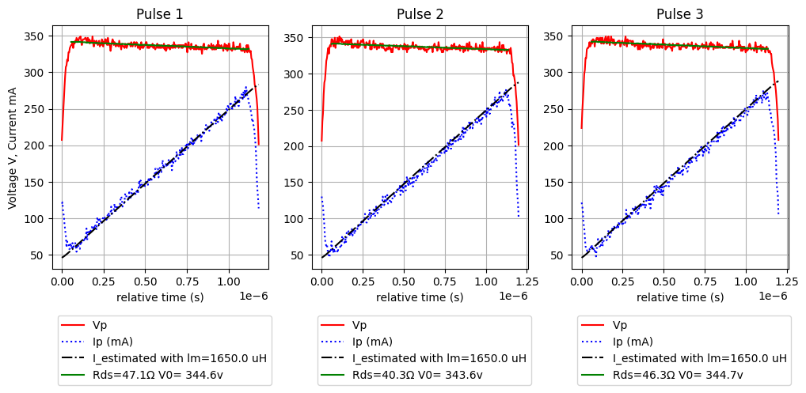
From the above figure, the estimated Lm and Rds are:
The average Rds_on value is 44.5 Ω (see below), which falls within the datasheet specification range of [28 Ω, 48 Ω], see[1].
The average Vin is 344.3 V, and the measured value is about 345 V, which indicates good quality in the linear regression estimation.
Let's estimate the AL and the airgap.
So the above estimation suggests an air gap of 27 µm
Estimation of the leakage inductance and the primary MOSFET capacitor
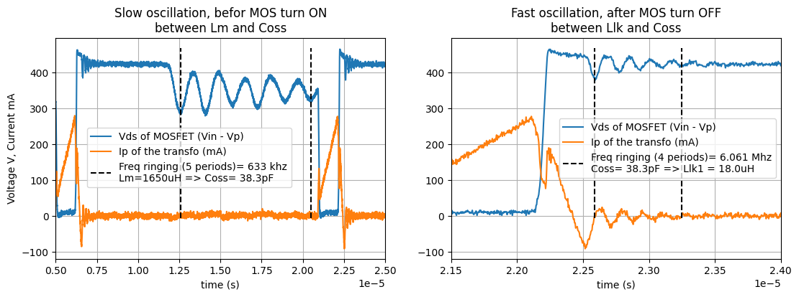
Coss estimation (left graph)
Conventional units
Primary leakage inductance estimation (right graph)
Conventional units
So 1% of leakage in primary is normal value
Verification of the max duty cycle¶
For this test, we use the same setup as before, but we lower the input voltage to 48 V to force the TNY‑264 controller into its maximum duty‑cycle operation.
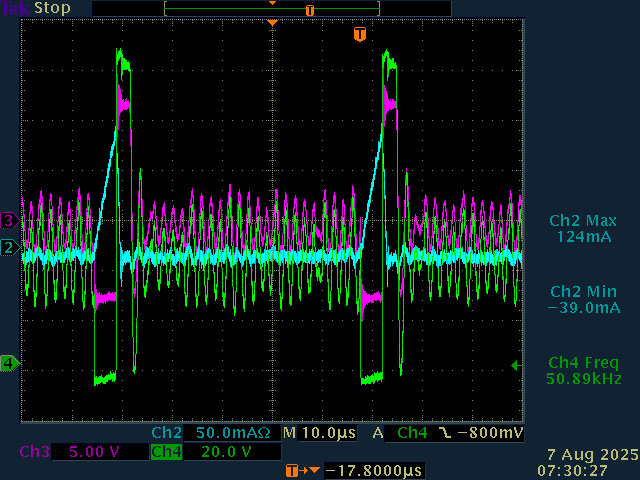
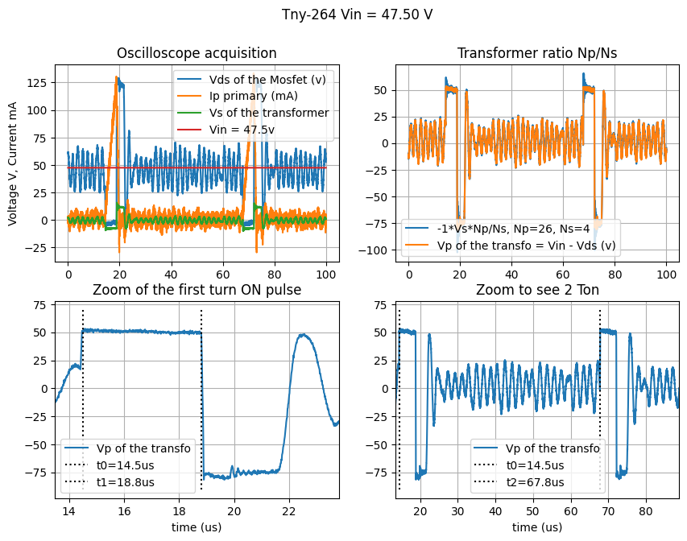
From the preprocessing of the measurements:
- top-left graph: raw data, showing a primary peak current of roughly 125 mA, below the 250 mA limit—which confirms that the cycle is reset by reaching the maximum duty cycle
- top-right graph: confirmation of the Np/Ns turns ratio
- bottom-left: zoom on the Ton interval, used to compute Ton from t0 and t1 (see calculation below)
- bottom-right: zoom showing two consecutive Ton intervals, used to estimate the switching frequency from t0 and t2 (see calculation below)
The controller operates with a nominal frequency of 132 kHz, a ±6% tolerance, and an 8 kHz jitter.
Under low‑load conditions, however, it skips cycles, making the spacing between switching periods unpredictable. To handle this, we will iterate through the data to estimate the number of periods between two successive ON instants.
Let's estimate the max-min frequencies using the tolerance and jitter:
Let's iterate through the data to estimate the number of periods between two successive ON instants.
Frequency for 5 periods: 93.81 kHz Frequency for 6 periods: 112.57 kHz Frequency for 7 periods: 131.33 kHz Frequency for 8 periods: 150.09 kHz Frequency for 9 periods: 168.86 kHz
Regarding the max min possible frequencies, we can see that 7 periodes is the good value. so we can calculate the duty cycle now:
The datasheet [1] duty cycle min max typ are 62, 65, 68
Change the transformer airgap¶
A test using the same design at Vin = 420 V was performed, showing that the magnetizing inductance decreases from 1650 µH at 360 V to about 500 µH at 420 V. This occurs because the core becomes saturated: although the TNY‑264 limits the current, the limit depends on the current slope, and at 420 V the effective current limit exceeds 320 mA, leading to saturation.
As a solution to the core saturation, we will add an air gap to increase the current slope, reduce the voltage‑time integral, and lower the core’s peak flux density.
Below are the test results with this new air gap.
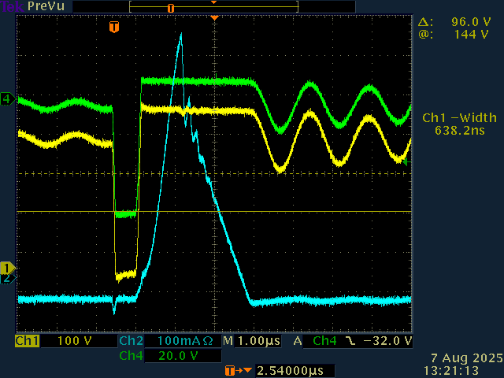
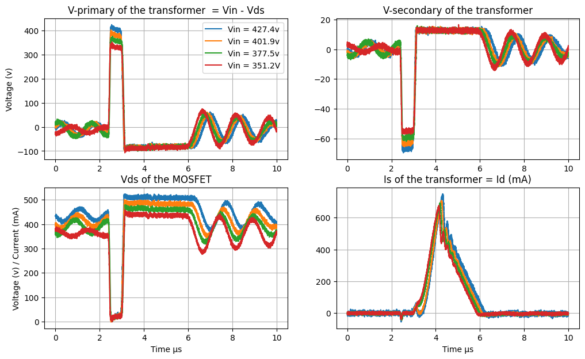
All waveforms remain stable as the input voltage increases, which is a clear indication that the core is no longer saturating.
Since the primary current is not measured (to avoid adding a measurement loop that could increase leakage), we estimate it using the method shown below: applying the voltage drop across Rds = 44.57 (previously calculated) and the measured Vds.
We will apply linear regression as a filtering method in each graph.
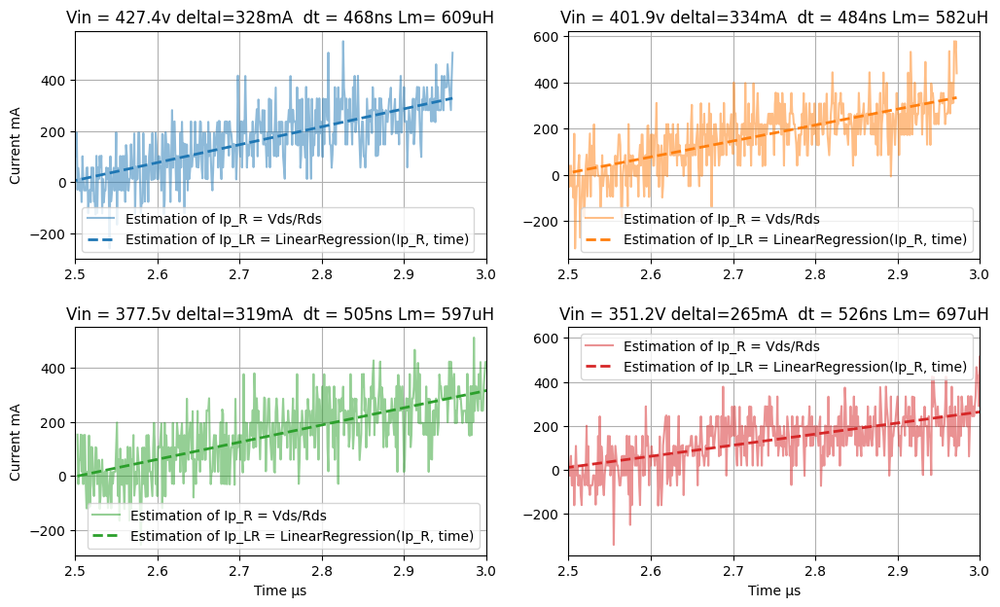
The magnetizing‑inductance estimation results are shown below. Although Lm decreases, it stays safely outside the core‑saturation region.
| Vin | dt_ns | di_mA | Lm_uH |
|---|---|---|---|
| 351 | 525 | 264 | 697 |
| 377 | 505 | 319 | 596 |
| 401 | 484 | 334 | 581 |
| 427 | 468 | 328 | 609 |
Zoom on the diode ON phase:
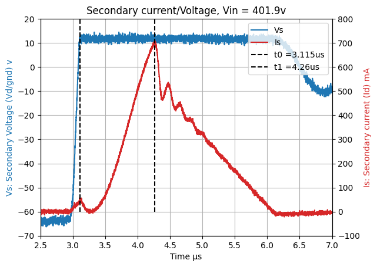
Understand the flyback waveforms
To understand the flyback waveforms, we use the simplified model shown below.
It simulates the moment when the MOSFET turns OFF:
- We observe the characteristic voltage Vsn0: the clamp voltage, then fast ringing caused by Llk and Coss, followed by slower ringing between Lm and Coss.
- The secondary current is also visible: it ramps up immediately after the MOSFET turns off, then decreases with superimposed fast ringing

We can compare the simulation with the measurement results, even though the MOSFET is not fully modeled (it is represented only by its Coss).
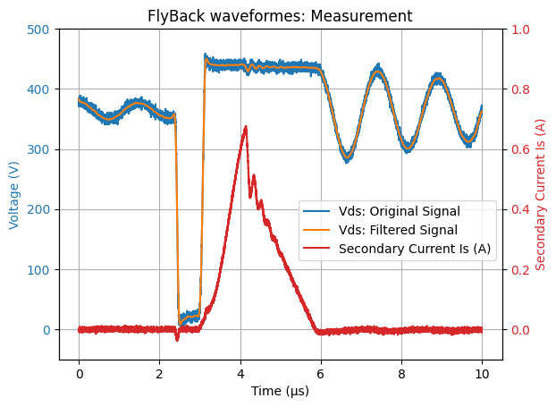
We can model the MOSFET as a perfect switch with a parallel Coss capacitor and a 40 Ω series resistor, and we obtain the same behaviours. See the simulation below:
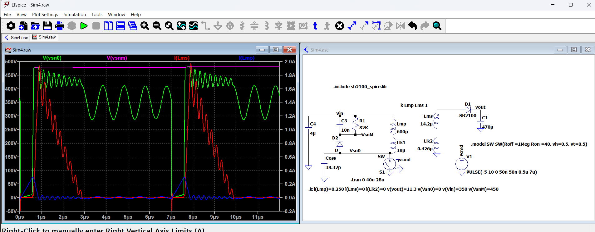
You can found all ltspice simulations of this flyback at the link.
Vout ramp¶
We measured the Vout ramp, which is shown in the figure below:
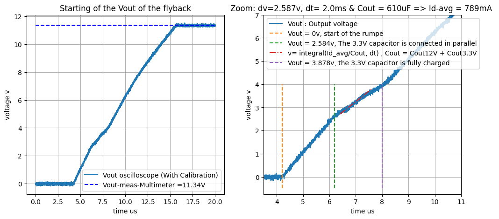
The ramp is composed of three segments:
- A fast slope from 0 to 2.584 V, explained by the flyback output capacitor (470 µF).
- A slower slope from 2.584 V to 3.878 V, caused by the flyback and buck capacitors being in parallel. Initially, the buck capacitor is charged, so the buck acts like a diode. Once Vout exceeds the capacitor’s initial voltage, the diode conducts and the two capacitors are effectively in parallel.
- Then a second fast slope from 3.878 V, similar to the first. In this region, the buck starts converting and isolates the flyback capacitor from the buck capacitor.
Secondary short‑circuit¶
In the figure below, there are three plots:
- Left: raw measurements of primary voltage and current. From these, we calculate Ton = 400 ns. With a switching frequency of 132 kHz, this results in a duty cycle of 5.28%, which matches the minimum duty cycle of the TNY‑264 controller (5.6%).
- Middle: flux calculation and comparison with an ideal inductance equal to the leakage inductance.
- Right: by comparing this plot with the middle one, we see that the primary inductance nearly matches the previously estimated leakage inductance (Llk1).
Conclusion:
The controller and circuit behave exactly as expected, and the restart time of about 800 ms is very close to the controller's specification.
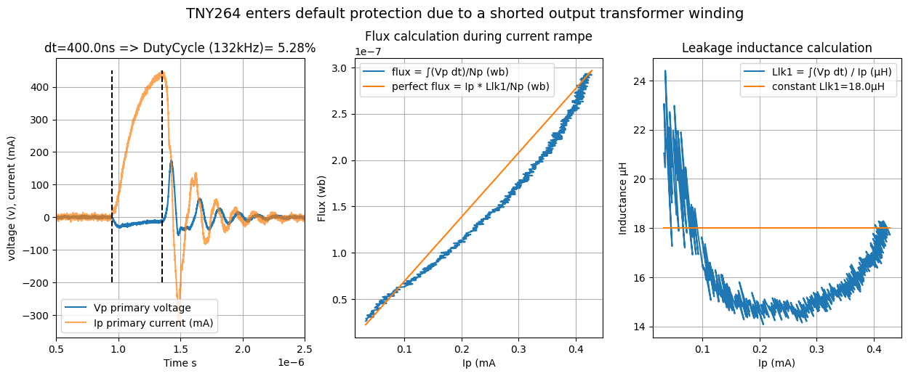
Rectifier diode modification¶
As mentioned in the table in the Modifications section, see the screenshot of the table below.
| Change | Before | After | Why | Impact |
|---|---|---|---|---|
| Output diode | MBRS340T3G | SB2100 | VRRM = 40 V (old) vs 100 V (new) VRRM of new design ≈ 62 V (peak) |
Not SMD PCB adaptation |
In this section, we will examine the waveforms before and after modifying this diode.
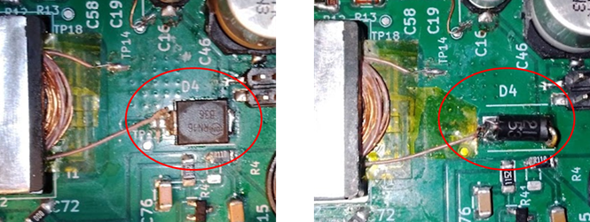
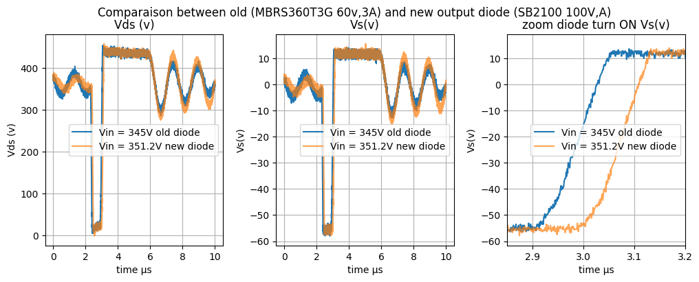
The new output diode behaves almost the same as the previous one, but with greater VRRM margin (see above).
References¶
TNY-264
https://www.farnell.com/datasheets/98510.pdf
ELP 22/6/16 with I 22/2.5/16 N87
https://www.tdk-electronics.tdk.com/inf/80/db/fer/elp_22_6_16.pdf
TNY280
https://www.power.com/sites/default/files/documents/tinyswitch-iii_family_datasheet.pdf
TNY-264
https://www.farnell.com/datasheets/98510.pdf
MBRS340T3G
https://www.onsemi.com/download/data-sheet/pdf/mbrs340t3-d.pdf
US1J
https://diotec.com/request/datasheet/us1a.pdf
US2MA
https://www.onsemi.com/download/data-sheet/pdf/us2aa-d.pdf
Output capacitor:EEVFK1V471Q 470uF 35V 20%
https://industrial.panasonic.com/cdbs/www-data/pdf/RDE0000/ABA0000C1181.pdf